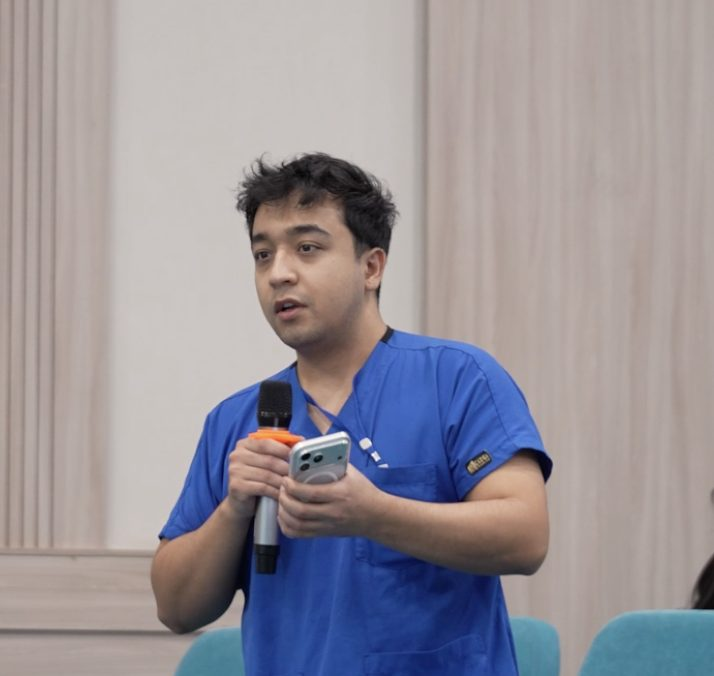
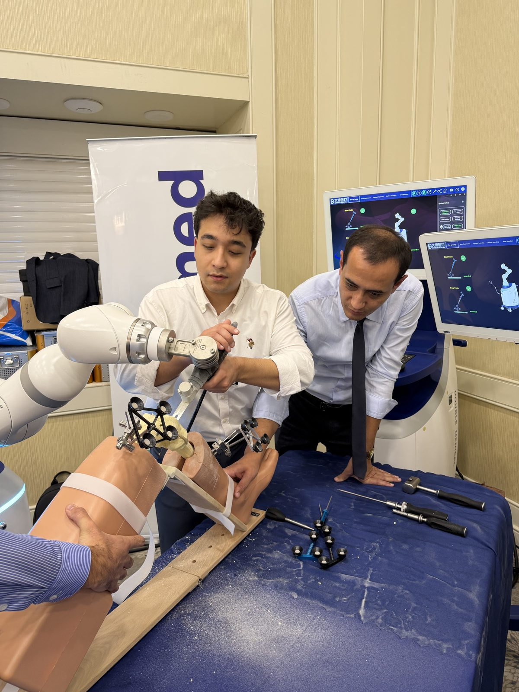
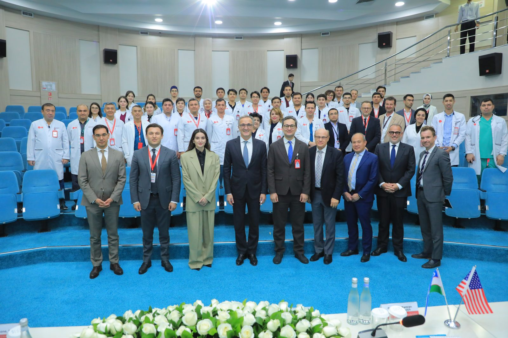
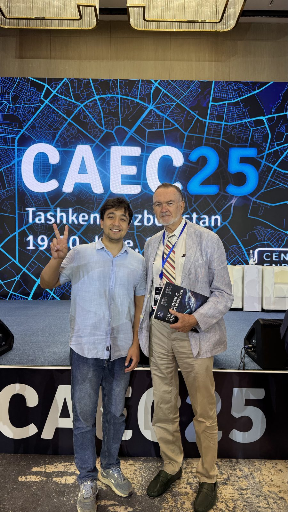
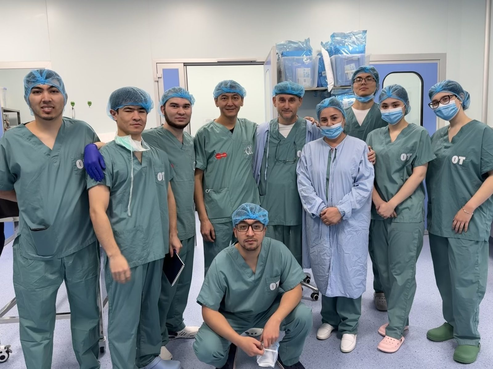

Заметки
в пути
Конференции, клиническая подготовка и моменты из моей медицинской карьеры в фотографиях и коротких заметках.
9 записей

Современные технологии в травматологии и ортопедии
Доклад о портах в артроскопии, работа с роботом для артропластики и знакомство с коллегами на конференции травматологов-ортопедов Узбекистана.
Генеральный директор Cleveland Clinic в Akfa Medline
Доктор Томислав Михалевич, генеральный директор Cleveland Clinic, посетил нашу клинику и побеседовал с врачами и резидентами о будущем медицины и медицинского образования.
Доклад на KUA 2025 в Сеуле
Мой устный доклад о 64 случаях детской mini PCNL в положении на спине на ежегодном собрании Корейской урологической ассоциации.
За консолью хирургического робота
Тренировка за консолью хирургического робота во время клинической ротации и работа с новейшей системой da Vinci.
Окончание медицинского университета
Вручение диплома MD на выпускной церемонии медицинской школы Central Asian University.
Помощь в организации CAEC25 в Ташкенте
Организационная работа на Центральноазиатском конгрессе по эндоурологии и встреча с профессором Петером Алькеном.
Стив Возняк на CAU Tech Summit '25
Стив Возняк выступил на CAU Tech Summit '25 в Ташкенте, а после выступления мы сфотографировались с ним.